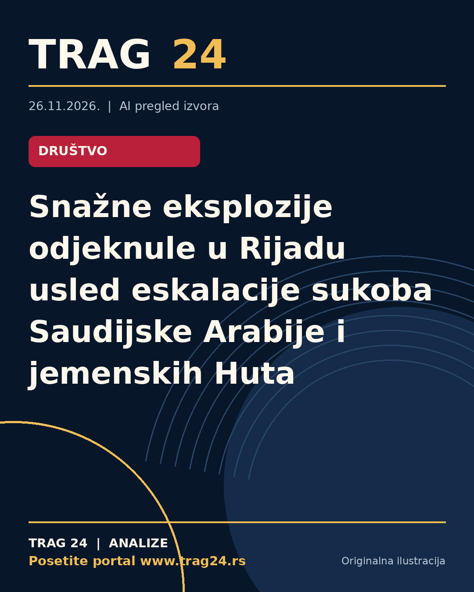

Snažne eksplozije odjeknule u Rijadu usled eskalacije sukoba Saudijske Arabije i jemenskih Huta

ŠTA SE DOGODILO
Nekoliko snažnih eksplozija zabeleženo je danas u saudijskoj prestonici Rijadu. Civilna zaštita Saudijske Arabije izdala je upozorenje o mogućoj opasnosti u provinciji Rijad, vezano za povećanu napetost u sukobu sa jemenskom pobunjeničkom grupom Huti.
HRONOLOGIJA
Huti, koje podržava Iran, od 2014. godine kontrolišu veći deo severnog Jemena, uključujući glavni grad Sanu. Saudijska Arabija je od 2015. godine predvodila vojnu koaliciju radi obnove vlasti međunarodno priznate jemenske vlade i suzbijanja Huta. Od tada su sukobi povremeno eskalirali, uključujući raketne i dron napade na saudijsku teritoriju. U 2022. godini postignuto je primirje koje je smanjilo intenzitet sukoba, ali nije razrešilo političke tenzije.
ŠTA NAVODE IZVORI
Prema informacijama agencije Rojters i očevidaca, eksplozije su se zaista dogodile, a civilna zaštita je najavila potencijalnu opasnost, kasnije navedenu kao prošlu. Međutim, nije objavljeno zvanično objašnjenje uzroka eksplozija, niti podaci o šteti ili žrtvama. Sa druge strane, iz Huta je danas stigla informacija o napadu na najveću saudijsku rafineriju Ras Tanura, što može biti povezano sa eskalacijom sukoba, ali neposredna veza sa eksplozijama u Rijadu nije potvrđena.
ŠTA JE POTVRĐENO
Eksplozije su se zaista čule u Rijadu, izdato je upozorenje civilne zaštite koje je kasnije opozvano, a sukob između Saudijske Arabije i Huta i dalje je aktuelan. Promene u komandnoj strukturi saudijskih snaga u Jemenu najavljene su kao odgovor na trenutnu situaciju. Informacije o napadima obe strane u ovom sukobu su aktuelne i deo su trenutne bezbednosne situacije u regionu.
ŠTA NIJE POTVRĐENO
Za sada nema potvrde o uzrocima eksplozija u Rijadu, šteti nastaloj tim incidentom niti eventualnim povređenima. Takođe, povezanost današnjeg napada Huta na rafineriju Ras Tanura sa eksplozijama u samom Rijadu nije jasno dokazana niti potvrđena od strane zvaničnih izvora.
ŠTA OSTАJE OTVORENO: Ostaje nepoznanica šta je konkretno izazvalo eksplozije u Rijadu i da li su one deo koordinisanog ili odvojenog napada u okviru sukoba. Takođe, razvoj događaja u narednim danima može uticati na bezbednosnu situaciju u Saudijskoj Arabiji i širem regionu, kao i na diplomatski dijalog koji je, uprkos primirju, i dalje nestabilan.
Izvori
- https://www.kurir.rs/planeta/10173215/snazne-eksplozije-odjeknule-u-rijadu
- https://www.b92.net/info/svet/288167/snazne-eksplozije-odjeknule-u-rijadu-civilna-zastita-saudijske-arabije-opasnost-prosla/vest
Ova analiza je pripremljena uz pomoć veštačke inteligencije na osnovu javno dostupnih izvora. Navodi izvora nisu nužno nezavisno potvrđeni.